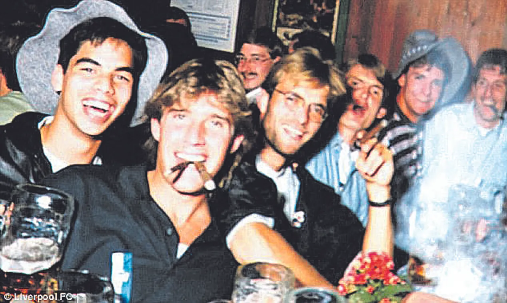
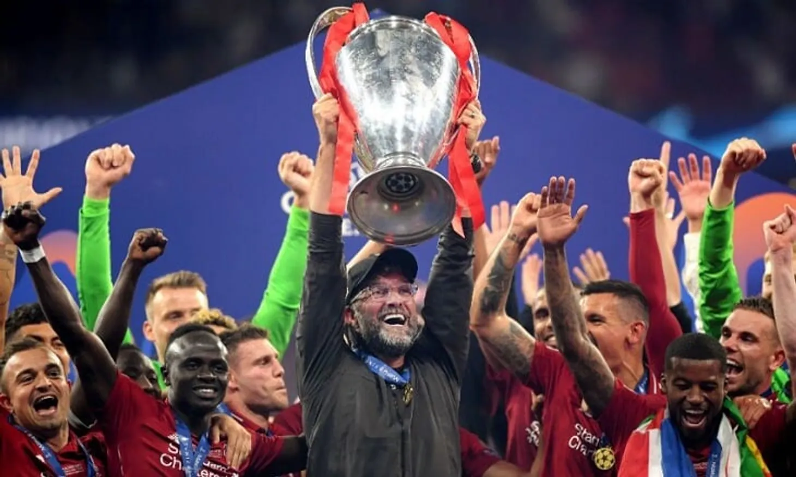

У спортивному костюмі і з фірмовою посмішкою на обличчі. Типовий Юрген Клопп на обкладинці біографії, яку написав німецький журналіст Ельмар Невелінг (співавтор книги «Анатомія сучасної гри»). Наприкінці минулого року український переклад вийшов у видавництві «Наш Формат». І став хітом ще до того, як біографія потрапила у книгарні. Першу партію примірників розібрали на стадії передзамовлень. Хтось отримав оригінальний подарунок під ялинку на Новий рік.
В Україні взагалі біда зі спортивною літературою – її дуже мало. А те, що видають, то, іноді краще б цього не робили. Скалічений переклад біографії Ліонеля Мессі авторства Гільєма Балаге – це просто жах. І чудовий приклад, як не треба робити.
Від «Юргена Клоппа» Невелінга враження приємніші. Це не книга з високої полиці, не бестселер рівня «Я – Златан» Ібрагімовича, словом не те від чого буде вау-ефект. Їй бракує глибини, але це хороший, міцний середняк, де просто і зрозуміло подано складні речі. Плюс магія та харизма Клоппа у кожній сторінці. Переклад на пристойному рівні без якихось смертельних змістовних, стилістичних та орфографічних гріхів. Є помилки, але кров з очей від них не йде.
Вся справа у формі викладу інформації. Невелінг написав книжку про Клоппа, не спілкуючись із самим тренером. Всі його цитати з відкритих джерел. Тому тут ви не знайдете суперінсайдів, ексклюзивних історій від Юргена і вогню. Але про Клоппа з автором говорять його друзі дитинства, тренери, колишні керівники, журналісти. А найбільш промовисті гра і результати його команд. Вийшла доволі атмосферна історія футболіста/тренера/людини з елементами репортажу, купою дрібних деталей і бажанням подивитися найближчий матч «Ліверпуля».
Батько Юргена Норберт Клопп був пристрасним тенісистом і засновником місцевої тенісної команди. Також він був непоганим воротарем у другій любителькій лізі і вимогливо ставився до сина. З Юргена практично вийшов тенісист – здібності у нього були, він чудово відчував м’яч, але любов до футболу виявилася сильнішою.
Мати Клоппа розповідала історію, як батько одного разу прибрав усе в кімнаті, поставив там ворота, а трирічний Юрген бив. «Малий, не в склянки бий, а у ворота», – говорив батько.
Друг дитинства і сусід Юргена пригадав, що в 11 років, слухаючи матч бундесліги по радіо, він коментував рішення тренерів: «Час виводити Клотца». Якщо вони не дослухалися до вказівок, то їм перепадало від майбутнього переможця Ліги чемпіонів.
У перший рік в «Ергенцінгені» Юрген не часто грав за юнацьку команду – переважно сидів на лавці запасних. Тренери говорили, що він не тягне на геніального гравця. Після одного з матчів Клопп отримав за свою гру оцінку 6. «Цілковитий провал, він жодного разу нікого не переграв один на один», – той звіт з матчу досі зберігається у клубі.
На тренування Юргена і одного здібного хлопця тричі на тиждень за 40 км від дому возив своєю машиною Норберт Клопп. Зараз тренер «Ліверпуля» має відчуття, що саме батькова допомога із транспортом стала вирішальною при відборі в команду, а не його талант. Але ті поїздки не були солодкими для Юргена – батько був найсуворішим критиком свого сина. Втім, це його ще більше мотивувало.
На другий рік у молодіжній команді «Ергенцінгена» Клопп став капітаном. Він організовував вечірки і був дуже популярним серед дівчат.
Преса і вболівальники кайфують від емоційної поведінки і яскравих прес-конференцій Клоппа. Але журналісти, які довго працювали з тренером, говорять, що він може бути і «страшенно прямим».
«Коли Клопп вважає, що його неправильно процитували, або його роздратувала уся стаття, він особисто зв’язується з журналістами і говорить аж ніяк не дипломатично. Але навіть, якщо йому щось не подобається, то образу він довго не тримає. Просто випускає пару, а наступного дня вже все в минулому. Мені це подобається. Знаєш, з ким маєш справу», – говорить журналіст Kicker Томас Хеннеке.
Ще Клоппа бісить відповідати всоте на ті самі питання.
Серця фанатів «Ліверпуля» німець завоював ще у 2014 році перед товариським матчем з «Боруссією» на «Енфілді». Тоді він з ніжністю поклав руку на емблему клубу, висловивши таким чином своє ставлення і вдячність. Так роблять гравці перед виходом на поле. А вже 9 жовтня 2015 року Клопп дав першу прес-конференцію в якості коуча «Ліверпуля».
«Я родом з-під Чорного лісу, був посереднім гравцем і колись починав у Майнці, як посередній тренер. Усе цілком нормально. Мабуть, я просто нормальний», – посміхнувся Юрген. Німець вирішив обійтися без епітетів у стилі Жозе Моурінью.
Клоппа підтримав легенда «Ліверпуля» Стівен Джеррард.
«Ми випили разом кави, і, прощаючись, я почувався видатним. Атмосфера у клубі прекрасна. Мені подобається його тактика і те, як він веде команду. Якби я зараз грав за червоних, хай у ролі молодого гравця чи заслуженого футболіста, і до нас прийшов би Юрген, я молився б на нього».
«Ліверпуль» вже взяв Лігу чемпіонів. А в цьому сезоні, схоже, ніщо не завадить команді відКЛОППати прем’єр-лігу.